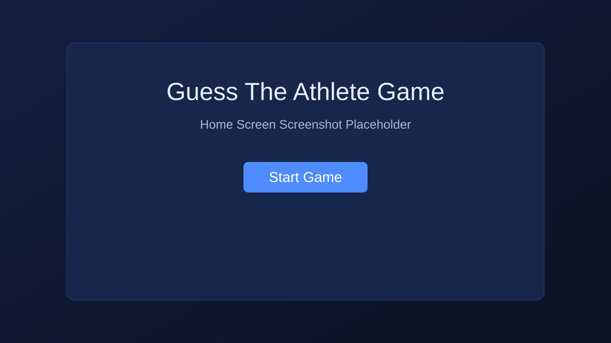
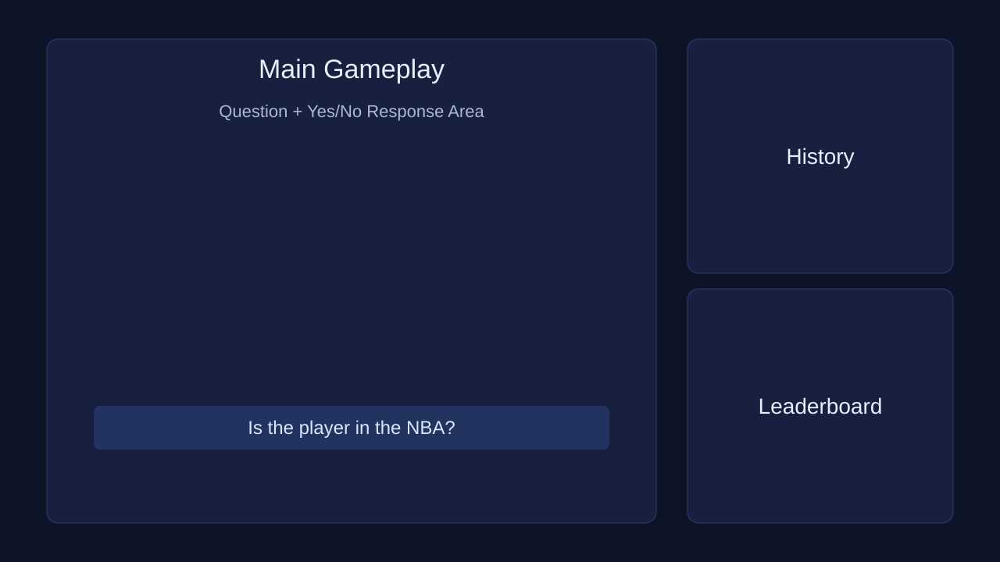
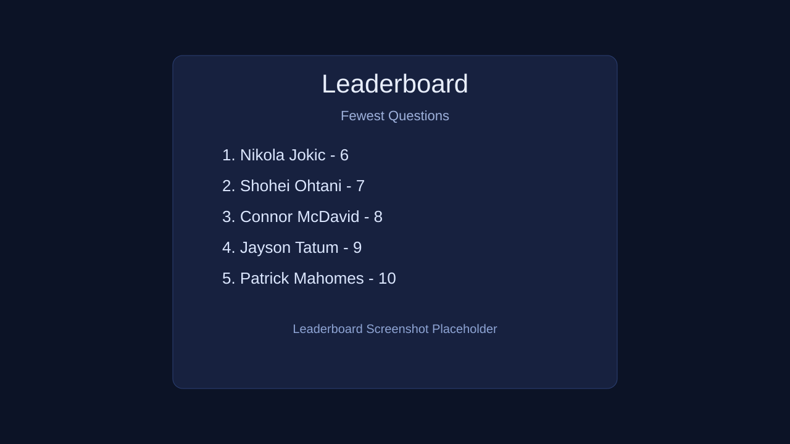

Guess The Athlete Game
A yes/no guessing game across NBA, NFL, MLB, and NHL—built as a single-page web app and published on GitHub Pages.
Use ← → or buttons below · Press N for speaker notes
What is this project?
The app picks one hidden athlete from a database of 72 players (active stars and retired legends).
- You ask yes/no questions (league, team, retired, jersey number, etc.)
- You can guess the name anytime
- Deduce mode walks you through filter questions
- Leaderboard saves your best rounds in the browser

What did I do?
- Built the full game in one file:
index.html(HTML + CSS + JavaScript) - Created a structured athlete database with team, league, conference, division, stats, and history
- Wrote answerQuestion() to parse natural-language yes/no questions
- Added Deduce mode, question history, give-up, and new-round flow
- Implemented localStorage leaderboard (one best score per player name)
- Published with GitHub Pages and
publish.sh/quick-publish.sh - Documented the project in
README.md,ONE_PAGER.md, andproject-overview.html
Why did I build this?
- Practice real JavaScript—arrays, objects, events, and string matching
- Combine sports knowledge with code—each player is a data object the game can reason about
- Make something playable—not just console output; a game people can try in the browser
- Learn deployment—git, GitHub, and Pages so others can play online
Design goal
Feel like 20 Questions for sports: ask smart questions, waste fewer guesses, and compete on the leaderboard for fewest questions.
How does it work?
Each athlete stores
name, league, conference, division, team, number, position, ring, retired, international, hallOfFame, pastTeams
Question engine
Your question is normalized (lowercase, no punctuation), then matched with rules for sport, league, team, active/retired, MLB AL/NL, and more.

The data model
// One player object in the athletes array
{
name: "David Pastrnak",
league: "NHL",
conference: "Eastern",
division: "Atlantic",
team: "Boston Bruins",
number: 88,
position: "Right Wing",
ring: false,
retired: false,
international: true,
pastTeams: []
}Important code: starting a round
function startRound() {
current = athletes[Math.floor(Math.random() * athletes.length)];
questionsCount = 0;
history = [];
// reset UI: answer box, inputs, placeholders
}current holds the secret player for this round. Every question uses answerQuestion(raw, current).
Important code: answering questions
function answerQuestion(qRaw, player) {
const q = applyPlayerNameAliases(normalize(qRaw));
if (/\b(nba|basketball)\b/.test(q)) return yesNo(player.league === "NBA");
if (/\bretired\b/.test(q)) return yesNo(subject.retired);
if (/\b(active|still playing)\b/.test(q)) return yesNo(!subject.retired);
if (isMlbLeagueQuestion(q)) {
// American League = AL, National League = NL
...
}
// team names, division, jersey number, decades, etc.
}Important code: extras I added
MLB: American League = AL
if (isMlbLeagueQuestion(q)) {
const target = mlbConferenceKey(player.conference);
if (asksAl) return yesNo(target === "al");
if (asksNl) return yesNo(target === "nl");
}Leaderboard: best round only
function dedupeLeaderboardBestRound(entries) {
// one row per player name
// keep lowest question count
}
Deduce mode
- Starts with all athletes (or Python-order copy)
- Asks fixed questions: sport, retired, championship, international
- Each Yes/No filters the list
- When one player remains, the game can auto-guess

Shipping the project
- GitHub repo: github.com/jhayward27-ui/jamesguessthatplayer
- GitHub Pages hosts the static files—open
index.htmlonline ./publish.sh "message"— commit and push safely tomain./quick-publish.sh— one command with auto timestamp message
Tech stack
HTML · CSS · JavaScript · localStorage · Git · GitHub Pages (no React, no npm build)
Live demo
Play the game here or open it full screen:
Tip: Ask “Is the player in the NBA?” → “Are they retired?” → guess a name.
What I learned & next steps
- How to structure data so code can answer questions
- Debugging real user phrasing (typos, “American League” vs nationality)
- Deploying and iterating with git push
- Add more players and stats
- Smarter question parser or hints
- Multiplayer or timed mode
Questions?
Thank you for watching.